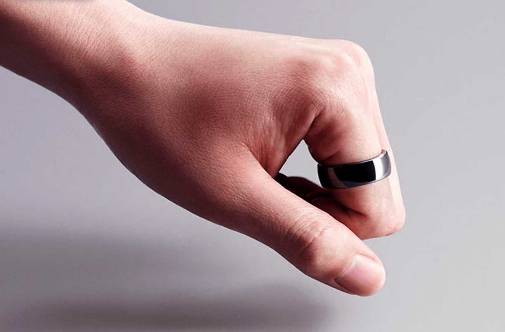
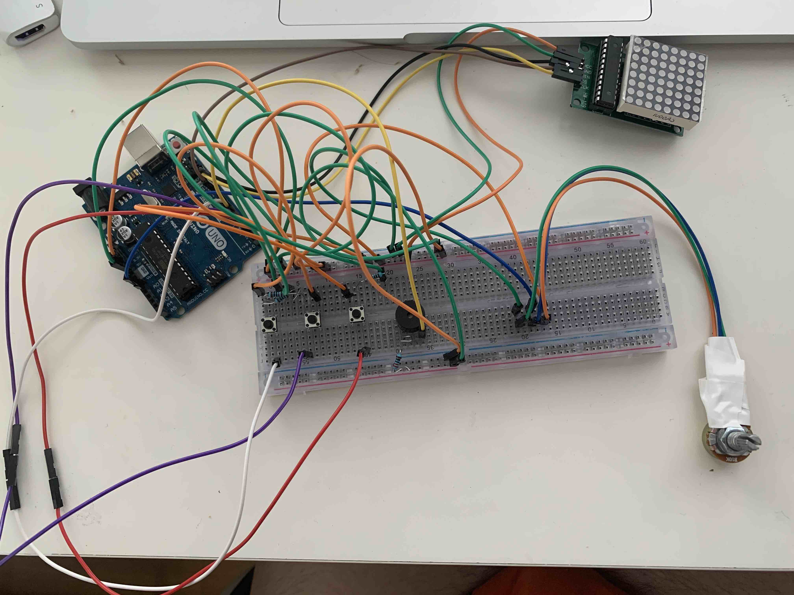
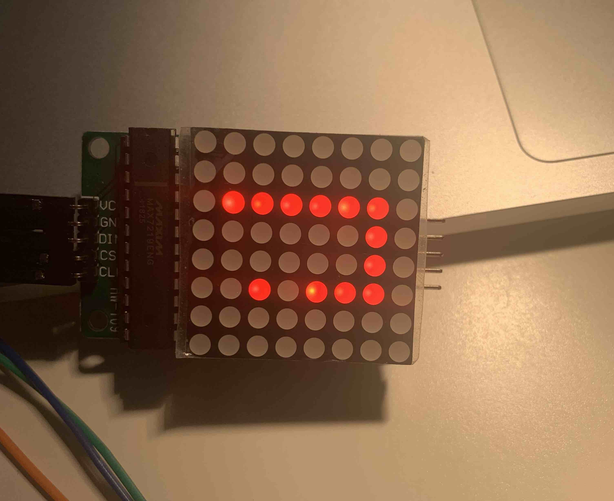

Research
This was probably the challenge I was most looking forward to, as I was always interested in how artificial intelligence could work and how is it possible to make something "evolve". I was particularily interested in neural networks and the evolutionary part, so I made my research and tinkering mostly into that.
MarI/O
The MarI/O project was made by SethBling, a youtuber from the US. He created a neural network for the game Super Mario, which cleared the first level of Mario on its own, simply by evolution. I really like that this shows that a neural network can power AI in various projects, and can fidure out what to do based on a simple trial-and-error basis.
The network uses inputs from the level - it sees the static objects in the world as white squares, and moving objects as black squares. The outputs of the network are the 8 buttons you can press while playing Mario. Through evolution using fitness and random changes in the layers of the network, it figures out the best move bit by bit, and in the end (in generation 34), it learns exactly what to press at which point to clear the level.
Tesla Full-Self-Drive
One of the most impressive and unbelievable AI projects is Tesla's self driving cars. These cars have extremely powerful neural networks that have inputs from all locations, seeing and knowing more than any driver could.
It is impressive to me that such a technology exists today - and is basically ready-to-use. It uses machine learning to make sense of the road, signs, roadlights, cars, people and so on, enabling it to always know where it is, where it can go and what the best way to get there is, while keeping safety at its core. The car becomes an "artificial creature", as it can move and react to outside inputs, and it can even come up to the driver in a parking lot, to help the driver find it.
Simulating natural selection
This project of natural selection simulation was made by Justin Helps a.k.a. Primer. The project is slightly different from the previous neural networks examples, but I really like that it visualizes evolution based on environment very well.
The creatures in this project evolve different traits: Speed, Size and Sense, and in different settings and environments, different traits dominate - which very nicely simulates and shows natural selection at its best. For example, in an environment with very low food, speed and sense turned out to be essential etc. I like that this project can communicate contextual evolution visually, and that it shows that different settings will make the artificial society evolve differently - creating a real simulated natural selection.
Tinkering
I decided to learn about the neural networks and how they work through a tutorial by a youtuber named The One
Learning with a simple neural network
I followed the tutorial by The One to create this neural network simulation - it takes inputs and calculates the fitness of the network - if the boomerang is facing the yellow shape, the fitness is high, it is facing away and leaving, the fitness is low. This then takes the "genes" of the first generation with the highest fitness and mutates them for the second generation so that even better boomerang networks are produced. The cycle continues and you can see in a few generations, almost all boomerangs follow the box.
Above is the mutation function - it simply randomly selects a mutation for the weights between the neurons of different layers, and then uses those to create outputs which are used for the boomerangs.
More learning, now with car movement
I found another tutorial, which more related to my final product and aim - creating a self learning car. I followed this tutorial which resulted in setting up a "dumb" neural network - a one that does not improve with generations, just makes each new network random - some get far, most dont. I then decided to start my own "car" from scratch. I followed the tutorial up to the point where I created the non-improving network and then I decided to move to 2D, as that is what I wanted to do in my final challenge.
My set up
This third showcase might seem like a step back, but I set up 5 different sensors that would serve as inputs for my neural network, and acceleration/turning as outputs. I made the sensors sensitive only to the track bounds (so if I wanted to add more agents, they would not interfere with each other). I then set up the movement and resetting using 2d collisions. I tinkered around with the speed, turning speed to find the optimal balance. I also had to figure out which colliders to use for best results and later optimize the camera movement so it would not follow the car in rotation.
Design and Build
Formula
For the challenge, I combined my learned knowledge from multiple sources and tutorials to create a neural network that would learn over several generations to drive through any course it would be presented with. I set up a scheme with five inputs from sensors, and three outputs - acceleration, deceleration and turning. The fitness of the network would be evaluated on the distance travelled, speed, sensor distance from edges, and aggression - how much does the formula accelerate and decelerate. Here is a diagram I made for visualizing my vision:

In the end, I ended up making a customizable 4-formula set-up, where I put four different genetic managers with different emphasis on distance, speed, sensors and aggression. They also have different multipliers for the speed, deceleration and different amounts of Neurons and Neuron layers. This results in various reactions from all four formulas - some are really good at one track, while they struggle on other tracks. It also highly depends on chance - since the evolution is highly randomized, each run of the simulation is different, but over time, the formulas should learn how to navigate any course. I think my product relates to the challenge greatly, as it really simulates a "brain" - the four artificial formula creatures are all thinking on their own and figuring out the track based on the fitness of each network and generation.

The final product results in four formulas with different approaches - some are slow and steady, others give emphasis on speed (but in some runs pay the price of not being able to get thourgh the first turn). Since the artificial network learns from scratch every time it is engaging to see each run, and see how fast each formula can get through the track.
Showcase
SNAKEPANTS
Reflect
Wearables in general and my vision of wearables in the future
I personally am not a huge fan of wearables such as smart watches. I do not necessarily want to have screens attached to me at all times, as to me it seems like you never have a break from being connected. However, some screen-less, nagging-less wearables are great innovations, such as a ring for payments, which generally make life easier and more convenient. I do not see wearables becoming a major tech segment like laptops or smartphones, but I could be proved wrong. I just hope that there will be more diverse small useful gadgets such as the contactless payment ring, rather than smartwatches and fitness trackers.
My final product
When starting to work on my challenge, I was not sure what I was going to come up with, but once I programmed the snake with the LED matrix I thought of a silly idea of embedding the product into pants - mainly because I wanted to do something different from an arm-mounted tech. I also wanted to include something more useful than the snake, which is why I opted for a countdown timer for washing hands. At first, I was not sure if I would be able to make a wearable prototype, but then I found some old clothes that I could destroy and got to work with a pair of scissors, and my sewing skills. The result looked quite funky, but it is just a first prototype - in future versions of SnakePants, the tech would be less bulky and the pants would look better - those are the areas to improve with my wearable :D. Other than that, I also experienced some problems with connections - the buttons and some other components kept disconnectingwhen worn, but that was due to the bulkiness of the cables. I complemented the resulting wearable with an ad showcase with 80s synthwave theme, which I think really fit and sold the idea even better.
My experience using this technology
I never worked with Arduino before, and found it really fun to expand from programming just applications, to programming circuits and wiring it up myself. On the other hand, I found it quite hard to create a wearable with the solderless breadboard and the universal-length jumper wires, as some components kept falling out or having bad connections. Nevertheless, I really enjoyed tinkering with the circuit, and figuring out how to wire everything and program the code to create my own gadgets - it gave me a feeling of achievement and showed that if I need some simple tech, I might as well build it myself.
